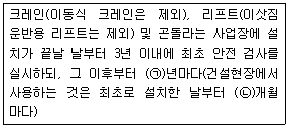
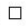
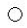
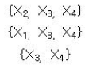
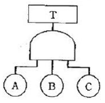
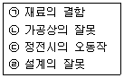
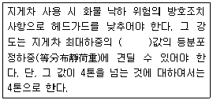
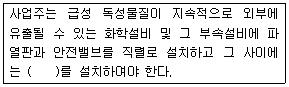

산업안전산업기사 (2018-08-19 기출문제)
1과목: 산업안전관리론
1. 사고예방대책의 기본원리 5단계 중 사실의 발견 단계에 해당하는 것은?
- 작업환경 측정
- 안정성 진단, 평가
- 점검, 검사 및 조사 실시
- 안전관리 계획수립
(정답률: 74%)

2. 재해예방의 4원칙에 해당하지 않는 것은?
- 손실연계의 원칙
- 대책선정의 원칙
- 예방가능의 원칙
- 원인연계의 원칙
(정답률: 75%)
3. 산업스트레스의 요인 중 직무특성과 관련된 요인으로 볼 수 없는 것은?
- 조직구조
- 작업속도
- 근무시간
- 업무의 반복성
(정답률: 79%)
4. 산업심리의 5대 요소에 해당되지 않는 것은?
- 동기
- 지능
- 감정
- 습관
(정답률: 78%)
5. 사업장의 도수율이 10.83이고, 강도율이 7.92일 경우의 종합재해지수(FSI)?
- 4.63
- 6.42
- 9.26
- 12.84
(정답률: 64%)
6. 리더십의 특성으로 볼 수 없는 것은?
- 민주주의적 지휘 형태
- 부하와의 넓은 사회적 간격
- 밑으로부터의 동의에 의한 권한 부여
- 개인적 영향에 의한 부하와의 관계유지
(정답률: 79%)
7. 매슬로우(A.H.Maslow)욕구단계 이론의 각 단계별 내용으로 틀린 것은?
- 1단계 : 자아실현의 욕구
- 2단계 : 안전에 대한 욕구
- 3단계 : 사회적(애정적) 욕구
- 4단계 : 존경과 긍지에 대한 욕구
(정답률: 86%)
8. 산업안전보건법령에 따른 근로자 안전ㆍ보건 교육 중 채용 시의 교육 내용이 아닌 것은?
- 사고 발생 시 긴급조치에 관한 사항
- 유해 위험 작업환경 관리에 관한 사항
- 산업보건 및 직업병 예방에 관한 사항
- 기계 기구의 위험성과 작업의 순서 및 동선에 관한 사항
(정답률: 61%)
9. 피로에 의한 정신적 증상과 가장 관련이 깊은 것은?
- 주의력이 감소 또는 경감된다.
- 작업의 효과나 작업량이 감퇴 및 저하된다.
- 작업에 대한 몸의 자세가 흐트러지고 지치게 된다.
- 작업에 대하여 무감각 무표정 경련 등이 일어난다.
(정답률: 76%)
10. 산업안전보건법령에 따른 안전 보건 표지에 사용하는 색채기준 중 비상구 및 피난소, 사람 또는 차량의 통행표지의 안내 용도로 사용하는 색채는?
- 빨간색
- 녹색
- 노란색
- 파란색
(정답률: 89%)
11. 일반적으로 교육이란 “인간행동의 계획적 변화”로 정의할 수 있다. 여기서 인간의 행동이 의미 하는 것은?
- 신념과 태도
- 외현적 행동만 포함
- 내현적 행동만 포함
- 내현적, 외현적 행동 모두 포함
(정답률: 83%)
12. OFF JT의 설명으로 틀린 것은?
- 다수의 근로자에게 조직적 훈련이 가능하다.
- 훈련에만 전념하게 된다.
- 효과가 곧 업무에 나타나며 훈련의 좋고 나쁨에 따라 개선이 쉽다.
- 교육훈련목표에 대해 집단적 노력이 흐트러 질 수 있다.
(정답률: 64%)
13. 산업 안전 보건법령에 따른 안전검사대상 유해 위험 기계 등의 검사 주기 기준 중 다음 (㉠),(㉡) 안에 알맞은 것은?

- ㉠1, ㉡4
- ㉠1, ㉡6
- ㉠2, ㉡4
- ㉠2, ㉡6
(정답률: 67%)
14. 보호구 안전인증 고시에 따른 방독마스크 중 할로겐용 정화통 외부측면의 표시 색으로 옳은 것은?
- 갈색
- 회색
- 녹색
- 노랑색
(정답률: 75%)
15. 직접 사람에게 접촉되어 위해를 가한 물체를 무엇이라고 하는가?
- 낙하물
- 비래물
- 기인물
- 가해물
(정답률: 82%)
16. 산업재해보상보험법에 따른 산업재해로 인한 보상비가 아닌 것은?
- 교통비
- 장의비
- 휴업급여
- 유족급여
(정답률: 88%)
17. 기업 내 교육 방법 중 작업의 개선 방법 및 사람을 다루는 방법, 작업을 가르치는 방법 등을 주된 교육 내용으로 하는 것은?
- CCS(Civil Communication Section)
- MTP(Management Training Program)
- TWI(Training Within Industry)
- ATT(American Telephone & Telegram Co)
(정답률: 77%)
18. 다음 중 교육의 3요소에 해당 되지 않는 것은?
- 교육의 주체
- 교육의 기간
- 교육의 매개체
- 교육의 객체
(정답률: 88%)
19. 산업안전보건법령에 따른 최소 상시 근로자 50명 이상 규모에 산업안전보건위원회를 설치 운영하여야 할 사업의 종류가 아닌 것은?
- 토사석 광업
- 1차 금속 제조업
- 자동차 및 트레일러 제조업
- 정보서비스업
(정답률: 86%)
20. 위험예지훈련의 방법으로 적절하지 않은 것은?
- 반복 훈련한다.
- 사전에 준비한다.
- 자신의 작업으로 실시한다.
- 단위 인원수를 많게 한다.
(정답률: 84%)
2과목: 인간공학 및 시스템안전공학
21. 체계설계 과정 중 기본설계 단계의 주요활동으로 볼 수 없는 것은?
- 작업 설계
- 체계의 정의
- 기능의 할당
- 인간 성능 요건 명세
(정답률: 40%)
22. 정보입력에 사용되는 표시장치 중 청각장치보다 시각장치를 사용하는 것이 더 유리 한 경우는?
- 정보의 내용이 긴 경우
- 수신자가 직무상 자주 이동하는 경우
- 정보의 내용이 즉각적인 행동을 요구하는 경우
- 정보를 나중에 다시 확인하지 않아도 되는 경우
(정답률: 77%)
23. FTA.도표에서 사용하는 논리기호 중 기본사상을 나타내는 기호는?


(정답률: 85%)
24. 조도가 250럭스인 책상 위에 짙은 색 종이 A와 B가 있다. 종이 A의 반사율은 20%이고, 종이 B의 반사율은 15%이다. 종이 A에는 반사율80%의 색으로, 종이 B에는 반사율 60%의 색으로 같은 글자를 각각 썼을 때의 설명으로 맞는 것은? (단, 두글자의 크기, 색, 재질 등은 동일하다.)(오류 신고가 접수된 문제입니다. 반드시 정답과 해설을 확인하시기 바랍니다.)
- 두 종이에 쓴 글자는 동일한 수준으로 보인다.
- 어느 종이에 쓰인 글자가 더 잘 보이는지 알 수 없다.
- A종이에 쓰인 글자가 B종이에 쓰인 글자보다 눈에 더 잘 보인다.
- B종이에 쓰인 글자가 A종이에 쓰인 글자보다 눈에 더 잘 보인다.
(정답률: 69%)
25. 검사공정의 작업자가 제품의 완성도에 대한 검사를 하고 있다. 어느 날 10,000개의 제품에 대한 검사를 실시하여 200개의 부적합품을 발견하였으나 이 로드에는 실제로 500개의 부적합품이 있었다. 이때 인간과오확률(Human Error Provability)은 얼마인가?
- 0.02
- 0.03
- 0.04
- 0.⑤
(정답률: 71%)
26. 제품의 설계단계에서 고유 신뢰성을 중대시키기 위하여 일반적으로 많이 사용되는 방법이 아닌 것은?
- 병렬 및 대기 리던던시의 활용
- 부품과 조립품의 단순화 및 표준화
- 제조부문과 납품업자에 대한 부품규격의 명세제시
- 부품의 전기적, 기계적, 열적 및 기타 작동조건의 경감
(정답률: 56%)
27. 작업장의 실효온도에 영향을 주는 인자중 가장관계가 먼 것은?
- 온도
- 체온
- 습도
- 공기유동
(정답률: 76%)
28. 인간-기계시스템에 관련된 정의로 틀린 것은?
- 시스템이란 전체목표를 달성하기 위한 유기적인 결합체이다.
- 인간-기계시스템이란 인간과 물리적 요소가 주어진 입력에 대해 원하는 출력을 내도록 결합되어 상호작용하는 집합체이다.
- 수동시스템은 입력된 정보를 근거로 자신의 신체적 에너지를 사용하여 수공구나 보조기구에 힘을 가하여 작업을 제어하는 시스템이다.
- 자동화 시스템은 기계에 의해 동력과 몇몇 다른 기능들이 제공되며, 인간이 원하는 반응을 얻기 위해 기계의 제어장치를 사용하여 제어기능을 수행하는 시스템이다.
(정답률: 59%)
29. 통제표시비를 설계할 때 고려해야 할 5가지요소에 해당하지 않는 것은?
- 공차
- 조작시간
- 일치성
- 목측거리
(정답률: 54%)
30. 결함수분석(FTA)결과 다음과 같은 패스셋을 구하였다. X4가 중복사상인 경우, 최소 패스셋(minimal path sets)으로 맞는 것은?

- {X3, X4}
- {X1, X3, X4}
- {X2, X3, X4}
- {X2, X3, X4}와 {X3, X4}
(정답률: 77%)
31. 인간실수의 주원인에 해당하는 것은?
- 기술수준
- 경험수준
- 훈련수준
- 인간 고유의 변화성
(정답률: 70%)
32. 통신에서 잡음 중의 일부를 제거하기 위해 필터(filter)를 사용하였다면, 어느 것의 성능을 향상시키는 것인가?
- 신호의 양립성
- 신호의 산란성
- 신호의 표준성
- 신호의 검출성
(정답률: 79%)
33. 청각적 자극제시와 이에 대한 음성응답과업에서 갖는 양립성에 해당하는 것은?
- 개념의 양립성
- 운동 양립성
- 공간적 양립성
- 양식 양립성
(정답률: 53%)
34. 작업공간에서 부품 배치의 원칙에 따라 레이아웃을 개선하려 할 때 부품 배치의 원칙에 해당하지 않는 것은?
- 편리성의 원칙
- 사용빈도의 원칙
- 사용 순서의 원칙
- 기능별 배치의 원칙
(정답률: 68%)
35. 시스템에 영향을 미치는 모든 요소의 고장을 형태별로 분석하여 그 영향을 검토하는 분석기법은?
- FTA
- CHECK LIST
- FMEA
- DECISION TREE
(정답률: 69%)
36. 시력손상에 가장 크게 영향을 미치는 전신 진동의 주파수는?
- 5Hz 미만
- 5~10Hz
- 10~25Hz
- 25Hz 초과
(정답률: 67%)
37. 화학 설비의 안전성을 평가하는 방법 5단계중 제 3단계에 해당하는 것은?
- 안전대책
- 정량적 평가
- 관계자료
- 정성적 평가
(정답률: 63%)
38. 사후보전에 필요한 평균수리시간을 나타내는 것은?
- MDT
- MTTF
- MTBF
- MTTR
(정답률: 69%)
39. 러닝벨트 위를 일정한 속도로 걷는 사람의 배기가스를 5분간 수집한 표본을 가스성분 분석기로 조사한 결과, 산소 16%, 이산화탄소 4%로 나타났다. 배기가스 전량을 가스미터에 통과시킨 결과, 배기량이 90리터였다면 분당 산소소비량과 에너지가 (에너지소비량)는 약 얼마인가?(오류 신고가 접수된 문제입니다. 반드시 정답과 해설을 확인하시기 바랍니다.)
- 0.95리터/분 - 4.75Kcal/분
- 0.96리터/분 - 4.80Kcal/분
- 0.97리터/분 - 4.85Kcal/분
- 0.98리터/분 - 4.90Kcal/분
(정답률: 38%)
40. 톱사상 T를 일으키는 컷셋에 해당하는 것은?

- {A}
- {A, B}
- {A, B, C}
- {B, C}
(정답률: 84%)
3과목: 기계위험방지기술
41. <보기>는 기계설비의 안전화 중 기능의 안전화와 구조의 안전화를 위해 고려해야할 사항을 열거한 것이다. <보기>중 기능의 안전화를 위해 고려해야 할 사항에 속하는 것은?

- ㉠
- ㉡
- ㉢
- ㉣
(정답률: 73%)
42. 탁상용 연삭기에서 일반적으로 플랜지의 지름은 숫돌 지름의 얼마 이상이 적정한가?
- 1/2
- 1/3
- 1/5
- 1/10
(정답률: 82%)
43. 공작기계인 밀링 작업의 안전사항이 아닌 것은?
- 사용 전에는 기계 기구를 점검하고 시운전을 한다.
- 칩을 제거 할 때는 칩브레이커로 제거한다.
- 회전하는 커터에 손을 대지 않는다.
- 커터의 제거 설치 시에는 반드시 스위치를 차단하고 한다.
(정답률: 79%)
44. 다음 중 욕조 형태를 갖는 일반적인 기계 고장 곡선에서의 기본적인 3가지 고장유형에 해당하지 않는 것은?
- 피로고장
- 우발고장
- 초기고장
- 마모고장
(정답률: 73%)
45. 산업안전보건법령에 따른 안전난간의 구조 및 설치 요건에 대한 설명으로 옳은 것은?
- 상부 난간대, 중간 난간대, 발끝막이판 및 난간기둥으로 구성하여야 한다.
- 발끝막이판은 바닥면 등으로부터 5Cm 이하의 높이를 유지하여야 한다.
- 난간대는 지름 1.5Cm 이상의 금속제 파이프를 사용하여야 한다.
- 안전난간은 가장 취약한 지름에서 가장 취약한 방향으로 작용하는 70킬로그램 이상의 하중에 견딜 수 있어야 한다.
(정답률: 65%)
46. 보일러 안전한 가동을 위하여 압력방출장치를 2개 설치한 경우에 작동 방법으로 옳은 것은?
- 최고 사용압력 이하에서 2개가 동시작동
- 최고 사용압력이하에서 1개가 작동되고 다른 것은 최고 사용압력 1.⑤배 이하에서 작동
- 최고 사용압력 이하에서 1개가 작동되고 다른것은 최고 사용 압력 1.1배 이하에서 작동
- 최고 사용 압력의 1.1배 이하에서 2개가 동시작동
(정답률: 67%)
47. 크레인에서 훅걸이용 와이어로프 등이 훅으로부터 벗겨지는 것을 방지하기 위해 사용하는 방호장치는?
- 덮개
- 권과방지장치
- 비상정지장치
- 해지장치
(정답률: 59%)
48. 프레스 및 전단기에서 양수조작식 방호장치 누름버튼의 상호간 최소 내측거리로 옳은 것은?
- 100mm
- 150mm
- 250mm
- 300mm
(정답률: 79%)
49. 다음 중 드릴링 작업에 있어서 공작물을 고정하는 방법으로 가장 적절하지 않은 것은?
- 작은 공작물은 바이스로 고정한다.
- 작고 길쭉한 공작물은 플라이어로 고정한다.
- 대량 생산과 정밀도를 요구할 때는 지그로 고정한다.
- 공작물이 크고 복잡할 때는 볼트와 고정구로 고정한다.
(정답률: 67%)
50. 이동식크레인과 관련된 용어의 설명 중 옳지 않은 것은?
- “정격하중”이라 함은 이동식 크레인의 지브나붐의 경사각 및 길이에 따라 부하할 수 있는 최대 하중에서 인양기구(훅, 그래브 등)의 무게를 뺀 하중을 말한다.
- “정격 총 하중”이라 함은 최대하중 (붐 길이 및 작업반경에 따라 결정)과 부가하중(훅과 그 이외의 인양 도구들의 무게)을 합한 하중을 말한다.
- “작업반경”이라 함은 이동식 크레인의 선회중심선으로부터 훅의 중심선까지의 수평거리를 말하며, 최대 작업반경은 이동시크레인으로 작업이 가능한 최대치를 말한다.
- “파단하중”이라 함은 줄걸이 용구 1개를 가지고 안전율을 고려하여 수직으로 매달 수 있는 최대 무게를 말한다.
(정답률: 60%)
51. 프레서 금형의 설치 및 조정 시 슬라이드 불시하강을 방지하기 위하여 설치해야 하는 것은?
- 인터록
- 글러치
- 게이트 가드
- 안전블럭
(정답률: 80%)
52. 프레스 방호장치 중 가드식 방호장치의 구조 및 선정조건에 대한 설명으로 옳지 않은 것은?
- 미등(Inching)행정에서는 작업자 안전을 위해 가드를 개방할 수 없는 구조로 한다.
- 1행정, 1정지 기구를 갖춘 프레스에 사용한다.
- 가드 폭이 400mm 이하일 때는 가드 측면을 방호하는 가드를 부착하여 사용한다.
- 가드 높이는 프레스에 부착되는 금형 높이 이상 (최소 180mm)으로 한다.
(정답률: 57%)
53. 다음은 지게차의 헤드가드에 관한 기준이다. ( )안에 들어갈 내용으로 옳은 것은?

- 2배
- 3배
- 4배
- 5배
(정답률: 73%)
54. 다음 중 보일러의 폭발 사고 예방을 위한 장치로 가장 거리가 먼 것은?
- 압력제한 스위치
- 압력방출장치
- 고저수위 고정장치
- 화염 검출기
(정답률: 52%)
55. 산업안전보건법령상 회전중인 연삭숫돌지름이 최소 얼마이상인 경우로서 근로자에게 위험을 미칠 우려가 있는 경우 해당 부위에 덮개를 설치하여야 하는가?
- 3cm 이상
- 5cm 이상
- 10cm 이상
- 20cm 이상
(정답률: 52%)
56. 프레스 작업 시 금형의 파손을 방지하기 위한 조치 내용 중 틀린 것은?
- 금형 맞춤판은 억지 끼워맞춤으로 한다.
- 쿠션 핀을 사용할 경우에는 상승 시 누름 판의 이탈 방지를 위하여 단붙임한 나사로 견고히 조여야 한다.
- 금형에 사용하는 스프링은 인장형을 사용한다.
- 스프링 등의 파손에 의해 부품이 비산될 우려가 있는 부분에는 덮개를 설치한다.
(정답률: 55%)
57. 산업용 로봇에 지워지지 않는 방법으로 반드시 표시해야하는 항목이 있는데 다음 중 이에 속하지 않는 것은?
- 제조자의 이름과 주소, 모델 번호 및 제조 일련번호, 제조연월
- 머니플레이터 회전 반경
- 중량
- 이동 및 설치를 위한 인양 지점
(정답률: 47%)
58. 급정지기구가 있는 1행정 프레스의 광전자식 방호장치에서 광선에 신체의 일부가 감지된 후로부터 급정지 기구의 작동 시까지의 시간이 40ms 이고, 급정지 기구의 작동 직후로 부터 프레스기가 정지될 때지의 시간이 20ms 라면 안전거리는 몇 mm 이상 이어야 하는가?
- 60
- 76
- 80
- 96
(정답률: 44%)
59. 롤러의 위험점 전방에 개구부 간격 16.5mm의 가드를 설치하고자 한다면, 개구부에서 위험점까지의 거리는 몇 mm이상이어야 하는가? (단, 위험점이 전동체는 아니다.)
- 70
- 80
- 90
- 100
(정답률: 36%)
60. 산업안전 보건법령에 따라 컨베이어의 작업 시작전 점검사항 중 틀린 것은?
- 원동기 및 풀리 기능의 이상 유무
- 이탈 등의 방지 장치 기능의 이상 유무
- 과부하방지장치 기능의 이상 유무
- 원동기, 회전축, 기어 및 폴리 등의 덮개 또는 울 등의 이상 유무
(정답률: 60%)
4과목: 전기 및 화학설비위험방지기술
61. 작업장에서 꽂음접속기를 설치 또는 사용하는 때에 작업자의 감전위험을 방지하기 위하여 필요한 준수사항으로 틀린 것은?
- 서로 다른 전압의 꽂음접속기는 상호 접속되는 구조의 것을 사용 할 것
- 습윤한 장소에 사용되는 꽂음접속기는 방수형 등에 해당 장소에 적합한 것을 사용 할 것
- 꽂음접속기를 접속시킬 경우 땀 등으로 젖은 손으로 취급하지 않도록 할 것
- 꽂음접속기에 잠금 장치가 있는 때에는 접속 후 잠그고 사용 할 것
(정답률: 55%)
62. 전기 기계ㆍ기구에 누전에 의한 감전 위험을 방지하기 위하여 설치한 누전차단기에 의한 감전방지의 사항으로 틀린 것은?
- 정격 감도 전류가 30mA이하이고 작동시간은 3초 이내일 것
- 분기회로 또는 전기기계 기구마다 누전 차단기를 접속할 것
- 파손이나 감전사고를 방지할 수 있는 장소에 접속할 것
- 지락보호전용 기능만 있는 누전차단기는 과전류를 차단하는 퓨즈나 차단기 등과 조합하여 접속할 것
(정답률: 71%)
63. 페인트를 스프레이로 뿌려 도장작업을 하는 작업 중 발생할 수 있는 정전기 대전으로만 이루어진 것은?
- 유동대전, 충돌대전
- 유동대전, 마찰대전
- 분출대전, 충돌대전
- 분출대전, 유동대전
(정답률: 68%)
64. 정전기에 의한 재해 방지대책으로 틀린 것은?
- 대전방지제 등을 사용한다.
- 공기 중의 습기를 제거한다.
- 금속 등의 도체를 접지 시킨다.
- 배관 내 액체가 흐를 경우 유속을 제한한다.
(정답률: 74%)
65. 폭발위험장소 중 1종 장소에 해당하는 것은?
- 폭발성 가스 분위기가 연속적, 장기간 또는 빈번하게 존재하는 장소
- 폭발성 가스 분위기가 정상작동 중 주기적 또는 빈번하게 생성되는 장소
- 폭발성 가스 분위기가 정상작동 중 조성되지 않거나 조성된다 하더라도 짧은 기간에만 존재할 수 있는 장소
- 전기설비를 제조, 설치 및 사용함에 있어 특별한 주의를 요하는 정도의 폭발성 가스 분위기가 조성될 우려가 없는 장소
(정답률: 67%)
66. 누설전류로 인해 화재가 발생될 수 있는 누전화재의 3요소에 해당하지 않는 것은?
- 누전점
- 인입점
- 접지점
- 출화점
(정답률: 48%)
67. 전기사용장소의 사용전압이 440V인 저압전로의 전선 상호간 및 전로와 대지 사이의 절연저항은 얼마 이상이어야 하는가?(관련 규정 개정전 문제로 여기서는 기존 정답인 4번을 누르면 정답 처리됩니다. 자세한 내용은 해설을 참고하세요.)
- 0.1MΩ
- 0.2MΩ
- 0.3MΩ
- 0.4MΩ
(정답률: 61%)
68. 다음 중 전압의 분류가 잘못된 것은?(관련 규정 개정전 문제로 여기서는 기존 정답인 4번을 누르면 정답 처리됩니다. 자세한 내용은 해설을 참고하세요.)
- 600V 이하의 교류 전압 - 저압
- 750V 이하의 직류 전압 - 저압
- 600V초과 7KV이하의 교류 전압 - 고압
- 10kV를 초과하는 직류전압 - 초고압
(정답률: 73%)
69. 방폭구조 중 전폐구조를 하고 있으며 외부의 폭발성 가스가 내부로 침입하여 내부에서 폭발 하더라도 용기는 그 압력에 견디고, 내부의 폭발로 인하여 외부의 폭발성 가스에 착화될 우려가 없도록 만들어진 구조는?
- 안정증방폭구조
- 본질안전방폭구조
- 유입방폭구조
- 내압방폭구조
(정답률: 70%)
70. 피뢰기의 제한 전압이 800kV이고, 충격절연강도가 1000kV라면, 보호여유도는?
- 12%
- 25%
- 39%
- 43%
(정답률: 58%)
71. 최소점화에너지(MIE)와 온도, 압력 관계를 옳게 설명한 것은?
- 압력, 온도에 모두 비례한다.
- 압력, 온도 모두 반비례한다.
- 압력에 비례하고, 온도에 반비례한다.
- 압력에 반비례하고, 온도에 비례한다.
(정답률: 61%)
72. 폭발범위가 1.8~8.5vol%인 가스의 위험도를 구하면 얼마인가?
- 0.8
- 3.7
- 5.7
- 6.7
(정답률: 54%)
73. 공정별로 폭발을 분류할 때 물리적 폭발이 아닌 것은?
- 분해폭발
- 탱크의 감압폭발
- 수증기 폭발
- 고압용기의 폭발
(정답률: 58%)
74. 사업주가 금속의 용접 용단 또는 가열에 사용되는 가스 등의 용기를 취급하는 경우에 준수하여야 하는 사항으로 틀린 것은?
- 용기의 온도 섭씨 40℃ 이하로 유지 할 것
- 전도의 위험이 없도록 할 것
- 밸브의 개폐는 빠르게 할 것
- 용해아세틸렌의 용기는 세워 둘 것
(정답률: 73%)
75. 관로의 크기를 변경 하고자 할 때 사용하는 고나 부속품은?
- 밸브(valve)
- 엘보우(elbow)
- 부싱(bushing)
- 플랜지(flange)
(정답률: 56%)
76. 산업안전보건기준에 관한 규칙상 ( )안의 내용으로 알맞은 것은?

- 온도지시계 또는 과열방지장치
- 압력지시계 또는 자동경보장치
- 유량지시계 또는 유속지시계
- 액위지시계 또는 과압방지장치
(정답률: 76%)
77. 다음 물질 중 가연성 가스가 아닌 것은?
- 수소
- 메탄
- 프로판
- 염소
(정답률: 67%)
78. 산업안전 보건기준 관한 규칙에서 정한 위험 물질의 종류에서 인화성 액체에 해당 하지 않는 것은?
- 적린
- 에틸레테르
- 산화프로필렌
- 아세톤
(정답률: 58%)
79. 산업안전보건법령상 공정안전보고서의 내용 중 공정 안전자료에 포함되지 않는 것은?
- 유해ㆍ위험설비의 목록 및 사양
- 폭발위험장소 구분도 및 전기단선도
- 안전운전지침서
- 각종 건물ㆍ설비의 배치도
(정답률: 56%)
80. 황린의 저장 및 취급방법으로 옳은 것은/
- 강산화제를 첨가하여 중화된 상태로 저장한다.
- 물 속에 저장한다.
- 자연발화하므로 건조한 상태로 저장한다.
- 강알칼리 용액 속에 저장한다.
(정답률: 74%)
5과목: 건설안전기술
81. 콘크리트 타설 시 거푸집의 측압에 영향을 미치는 인자들에 관한 설명으로 옳지 않은 것은?
- 슬럼프가 클수록 측압이 크다.
- 거푸집의 강성이 클수록 측압은 크다.
- 철근량이 많을수록 측압은 작다.
- 타설 속도가 느릴수록 측압은 크다.
(정답률: 65%)
82. 굴착면의 기울기 기준으로 옳지 않은 것은?(관련 규정 개정전 문제로 여기서는 기존 정답인 3번을 누르면 정답 처리됩니다. 자세한 내용은 해설을 참고하세요.)
- 풍화암 - 1:0.8
- 연암 - 1:0.5
- 경암 - 1:0.2
- 건지 - 1:0.5 ~ 1:1
(정답률: 72%)
83. 차량계 하역운반기계의 운전자가 운전위치를 이탈하는 경우의 조치사항으로 부적절한 것은?
- 포크 및 버킷을 가장 높은 위치에 두어 근로자 통행을 방해하지 않도록 하였다.
- 원동기를 정지시키고 브레이크를 걸었다.
- 시동키를 운전대에서 분리시켰다.
- 경사지에서 갑작스런 주행이 되지 않도록 바퀴에 블록 등을 놓았다.
(정답률: 77%)
84. 작업으로 인하여 물체가 떨어지거나 날아올 위험이 있는 경우에 조치 및 준수하여야 할 사항으로 옳지 않은 것은?
- 낙하물방지망, 수직 보호망 또는 방호선반 등을 설치한다.
- 낙하물방지망의 내민 길이는 벽면으로부터 2m 이상으로 한다.
- 낙하물방지망의 수평면과의 각도는 20° 이상 30° 이하를 유지한다.
- 낙하물방지망은 높이 15m 이내마다 설치한다.
(정답률: 63%)
85. 건설업 산업안전보건관리비 항목으로 사용가능한 내역은?
- 경비원, 청소원 및 폐자재처리원 인건비
- 외부인 출입금지, 공사장 경계표시를 위한 가설 울타리 설치 및 해체비용
- 원활한 공사수행을 위하여 사업장 주변 교통정리를 하는 신호자의 인건비
- 해열제, 소화제 등 구급약품 및 구급용구 등의 구입비용
(정답률: 66%)
86. 산업안전보건법령에 따라 안전관리자와 보건관리자의 직무를 분류할 때 안전관리자의 직무를 분류할 때 안전관리자의 직무에 해당되지 않는 것은?
- 산업재해에 관한 통계의 유지ㆍ관리ㆍ분석을 위한 보좌 및 조언 지도
- 산업재해 발생의 원인 조사ㆍ분석 및 재발 방지를 위한 기술적 보좌 및 조언 지도
- 해당 사업장 안전교육계획의 수립 및 안전교육 실시에 관한 보좌 및 조언 지도
- 작업장 내에서 사용되는 전체 환기장치 및 국소 배기장치 등에 관한 설비의 점검과 작업방법의 공학적 개선에 관한 보좌 및 조언 지도
(정답률: 65%)
87. 추락에 의한 위험방지를 위해 해당 장소에서 조치해야 할 사항과 거리가 먼 것은?
- 추락방호망 설치
- 안전난간 설치
- 덮개 설치
- 투하설비 설치
(정답률: 67%)
88. 산업안전보건법령에서는 터널건설작업을 하는 경우에 해당 터널 내부의 화기나 아크를 사용하는 장소에는 필히 무엇을 설치하도록 규정하고 있는가?
- 소화설비
- 대피설비
- 충전설비
- 차단설비
(정답률: 75%)
89. 항타기 또는 항발기의 권상용 와이어로프의 안전계수 기준으로 옳은 것은?
- 3이상
- 5이상
- 8이상
- 10이상
(정답률: 62%)
90. 높이 2m를 초과하는 말비계를 조립하여 사용하는 경우 작업발판의 최소 폭 기준으로 옳은 것은?
- 20cm
- 30cm
- 40cm
- 50cm
(정답률: 65%)
91. 산업안전보건법령에 따른 가설통로의 구조에 관한 설치기준으로 옳지 않은 것은?
- 경사로가 25도를 초과하는 경우에는 미끄러지지 아니하는 구조로 할 것
- 경사는 30도 이하로 할 것
- 수직갱에 가설된 통로의 길이가 15m 이상인 경우에는 10m 이내마다 계단참을 설치할 것
- 건설공사에 사용하는 높이 8m 이상인 비계다리에는 7m 이내마다 계단참을 설치할 것
(정답률: 70%)
92. 비탈면 붕괴를 방지하기 위한 방법으로 옳지 않은 것은?
- 비탈면 상부는 토사제거
- 지하 배수공 시공
- 비탈면 하부의 성토
- 비탈면 내부 수압의 증가 유도
(정답률: 62%)
93. 철골 작업 시 위험 방지를 위하여 철골 작업을 중지하여야 하는 기준으로 옳은 것은?
- 강설량이 시간당 1mm이상인 경우
- 강우량이 시간당 1mm이상인 경우
- 풍속이 초당 20m 이상인 경우
- 풍속이 시간당 200m 이상인 경우
(정답률: 70%)
94. 발파작업에 종사하는 근로자가 준수해야 할 사항으로 옳지 않은 것은?
- 얼어붙은 다이나마이트는 화기에 접근시키거나 그 밖의 고열물에 직접접촉시키는 등 위험한 방법으로 융해되지 않도록 한다.
- 발파공의 충진 재료는 점토 모래 등의 사용을 금할 것
- 장전구(裝塡具)는 마찰ㆍ충격ㆍ정전기 등에 의한 폭발의 위험이 없는 안전한 것을 사용할 것
- 전기뇌관에 의한 발파의 경우 점화하기 전에 화약류를 장전한 장소로부터 30m 이상 떨어진 안전한 장소에서 전선에 대하여 저항측정 및 도통(道通) 시험을 할 것
(정답률: 60%)
95. 유해ㆍ위험 방지계획서 작성 대상 공사의 기준으로 옳지 않은 것은?
- 지상높이 31m 이상인 건축물 공사
- 저수용량 1천만톤 이상의 용수 전용 댐
- 최대 지간길이 50m 이상인 교량건설 등 공사
- 깊이 공사 10m 이상인 굴착공사
(정답률: 70%)
96. 앞쪽에 한 개의 조향륜 롤러와 뒤축에 두 개의 롤러가 배치된 것으로 (2축 3륜), 하층 노반다지기, 아스팔트 포장에 주로 쓰이는 장비의 이름은?
- 머캐덤 롤러
- 탬핑 롤러
- 페이 로더
- 래머
(정답률: 44%)
97. 거푸집 동바리에 작용하는 횡하중이 아닌 것은?
- 콘크리트 측압
- 풍하중
- 자중
- 지진하중
(정답률: 39%)
98. 절토공사 중 발생하는 비탈면붕괴의 원인과 거리가 먼 것은?
- 함수비 고정으로 인한 균일한 흙의 단위중량
- 건조로 인하여 점성토의 점착력 상실
- 점성토의 수축이나 팽창으로 균열 발생
- 공사진행으로 비탈면의 높이와 기울기 증가
(정답률: 63%)
99. 달비계의 최대 적재하중을 정하는 경우 달기와이어로프의 최대하중이 50Kg일 때 안전 계수에 의한 와이어로프의 절단하중은 얼마인가?
- 1000Kg
- 700Kg
- 500Kg
- 300Kg
(정답률: 63%)
100. 안전난간의 구조 및 설치요건과 관련하여 발끝막이판은 바닥면으로부터 얼마이상의 높이를 유지하여야 하는가?
- 10Cm 이상
- 15Cm 이상
- 20Cm 이상
- 30Cm 이상
(정답률: 50%)